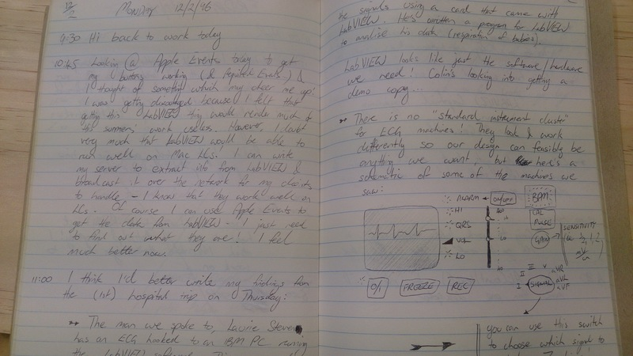

4-bit Rules of Computing, Part 1
Here is the second part of my blog series expanding on my 4-bit rules of computing.
In this instalment: Rule 4, on keeping a notebook or journal.
I had planned on including Rules 5,6 and 7 as well (that is, all of the third bit, out of 4 bits), but it is taking me more time to write up my thoughts about those other rules, and I want to get something out roughly every week.
Rule 4: If you're exploring, keep a notebook/journal
(or, indeed, a blog)
One of the undergrad modules in my UTas degree was Computer Security, and as well as the dreary, dry textbooks I've forgotten about, we read The Cuckoo's Egg by Clifford Stoll. It's a fun read, and though the technical details are pretty dated now (it relates events from the 1980s), there's still a lot to learn — particularly about the value of applying the Scientific Method in your investigations, and of keeping detailed notes.
Cliff demonstrates that careful notes are valuable for at least these reasons:
- To accurately record and recall what happened
- Gather data from experiments for detailed analysis
- As evidence that a task was performed, or to support a hypothesis
- As material to teach others
- A place to organise paths of inquiry
I took a lot of Cliff's advice to heart — he's a genuine Doc Brown and his book was very inspiring. Having kept lab notes for about 20 years now, I firmly believe this to be the most important practice I picked up during my University career.
Even if you don't keep your notebook online (and there are good arguments for technical blogging), you should definately keep some record (in a computer!) of your explorations and experiments. It is such a relief and a boon to leave a project aside and know that you will be able to come back to it after an extended break and pick up were you left off — and what you were thinking — because you left careful, searchable notes.
I like to record the following in my notes:
- The date and time (I have key bindings for this in Emacs)
- What are my goals?
- Hypotheses. What data do I need? How will I get those?
- Steps for setting up build/test/run apparatus
- Procedures for experiments
- Outcome of experiments
- Conclusions
- Concerns? Where am I stuck or what don't I understand?
- A short plan for how to get unstuck
Looking at these, they pretty much mirror what we are taught in High School Science class about keeping lab notes, don't they?
I often find that the discipline of writing down these things is helpful in my problem solving so that I have some structure about how to approach the goal, rather than just bashing my head against a wall.
It helps that I can type almost as fast as I think now (yeah yeah, I'm not that fast at typing…). Back when I kept hand-written notes it was a pain (literally) to write this much detail down, but I did it even then because it was helpful, and with a detailed map of where I had come and was going, I almost never got lost.

This physical notebook is a lovely thing to have, but today I recommend that you save your wrist as well as your wits and keep an electronic journal or notebook. You'll be able to search it, and read it. If you like hand-drawing diagrams, then you can still do that and either cross-reference a physical notebook against your electronic notes, or else scan you drawings into the computer.
Do you keep notes while you explore? What tools do you use, and how do you structure your notes?